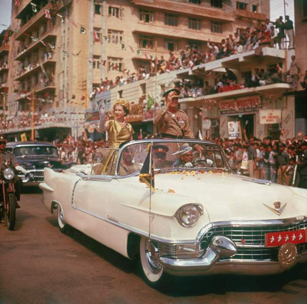
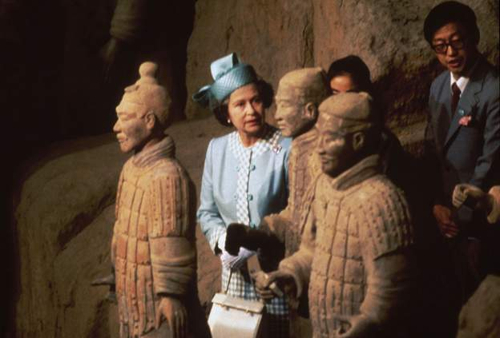
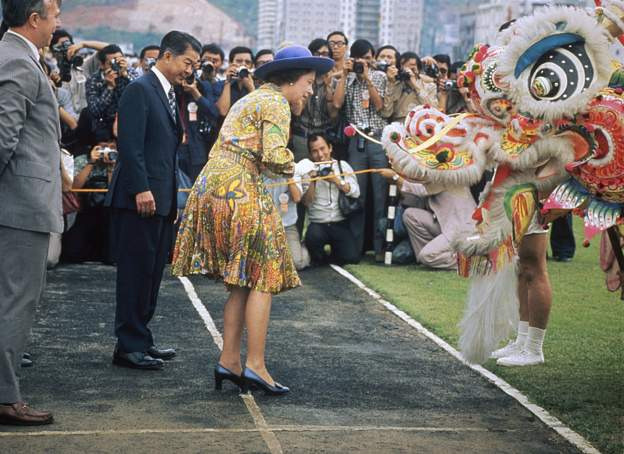
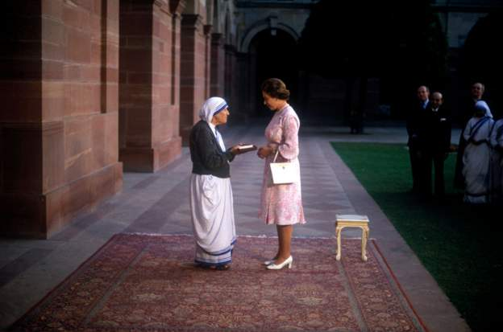

Scotland's First Minister Nicola Sturgeon has described the Queen as an inspiration in an entry in a book of
condolence at her official residence in Edinburgh:
"On behalf of Scotland, I express deep sorrow on the passing of Her Majesty, Queen Elizabeth, and also the
gratitude of our nation for her steadfast service, dedication and abiding love of Scotland.
"In so many ways, and for so many of us, she was Elizabeth, Queen of Scots.
"Personally, I will cherish and value for the rest of my life the words of wisdom and counsel I was so
privileged to receive during the audiences she graciously afforded.
"In our sadness, we will continue to be guided by her example and inspiration. Thank you, Ma'am, may you
rest in
peace."
In pictures: The Queen's visits to Asia
The Queen was an avid traveller, visiting 117 countries during her reign. Here are some of the highlights
from
the late royal's most memorable moments in Asia.

Queen Elizabeth II is driven through the streets of Karachi during the second phase of her
tour
of
PakistanImage caption: Queen Elizabeth II is driven through the streets of Karachi during the second
phase
of her tour of Pakistan. The Queen viewing some of the Terracotta Army soldier statues during a
state
visit
to China in 1986 Getty ImagesCopyright: Getty Images

The Queen viewing some of the Terracotta Army soldier statues during a state visit to China
in
1986
Image caption: The Queen viewing some of the Terracotta Army soldier statues during a state visit to
China
in 1986. Getty ImagesCopyright: Getty Images

The Queen meets a Chinese dragon in Hong Kong during the Royal Tour of 1975. Image caption:
The
Queen
meets a Chinese dragon in Hong Kong during the Royal Tour of 1975. Getty ImagesCopyright: Getty
Images

The Queen presents the Order of Merit to Mother Teresa at the Presidential Palace in Delhi,
India,
in 1983. Getty ImagesCopyright: Getty Images